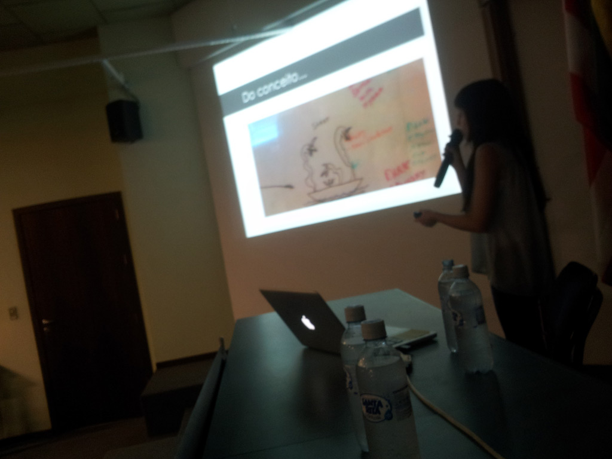
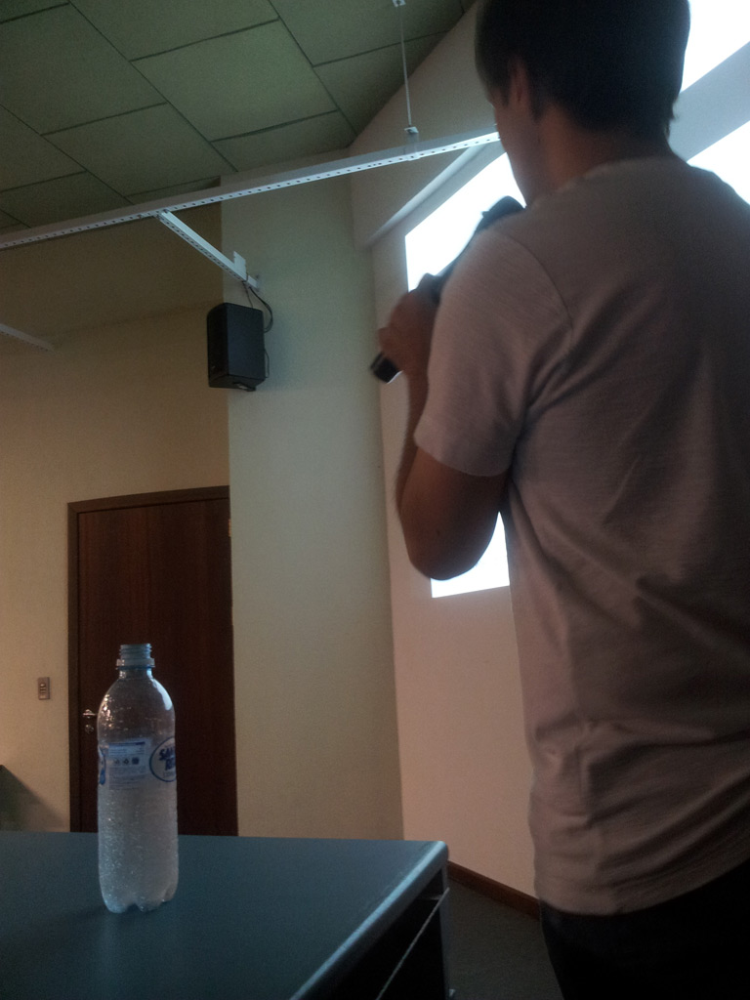

A palestra foi apresentada em 5 partes, sendo as 3 primeiras apresentadas pela Letícia e as restantes por mim. O auditório da biblioteca da Universidade de Blumenau logo encheu, com mais de 200 pessoas segundo o professor Everaldo.
Letícia apresentando sua parte da palestraAmbos estávamos um pouco nervosos, mas a palestra correu bem e acreditamos que os alunos que assistiram gostam, principalmente pelas perguntas que fizeram no final da apresentação. Foi muito bom também conversar com as pessoas que vieram até nós após a palestra.
Eu apresentando minha parteDepois vou postar mais fotos do evento aqui. Abaixo está a apresentação como foi prometido! Fiquem a vontade para baixar, tem links muito legais nos últimos slides. Qualquer dúvida é só deixar um comentário aqui que logo responderemos!
Muito obrigado ao pessoal da FURB pela oportunidade de ir até lá falar sobre desenvolvimento de jogos, especialmente o professor Everaldo e o Júlio. Obrigado!